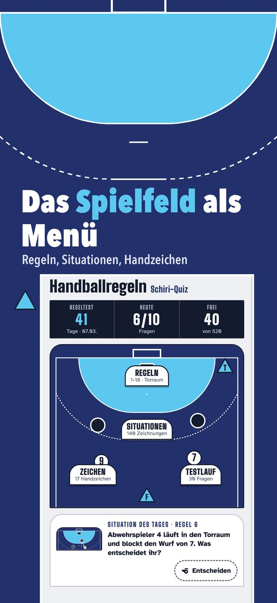
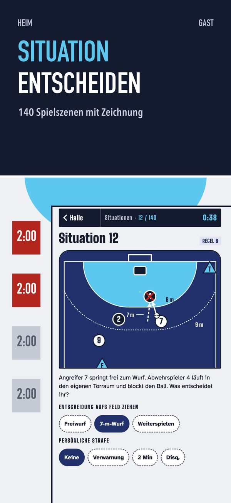
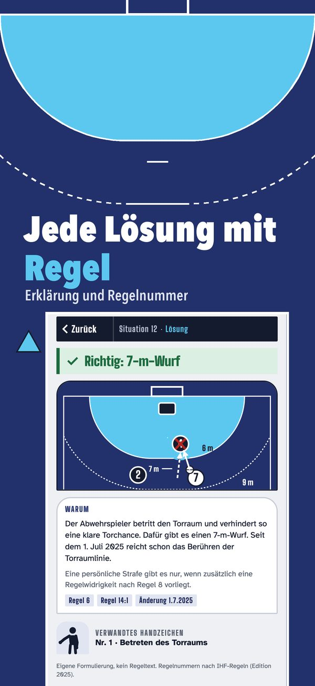

Schiedsrichter Regeltest üben
Einmalkauf – kein Abo. Handballregeln – Schiri-Quiz bereitet dich auf den Regeltest vor: als Schiedsrichter-Anwärter, als aktiver Schiri vor der Saison oder am Zeitnehmertisch. Die Startseite ist ein Spielfeld von oben: Torraum für die Regeln 1–18, 9-m-Raum für Situationen, Wechselraum für Handzeichen.



Ohne Kauf nutzbar: 40 Fragen (30 Regelfragen, 10 Situationen), 1 Testlauf, 6 Zeichen-Situationen und alle 17 Handzeichen. Die Vollversion ist ein Einmalkauf: 520 Fragen, 10 Testläufe, 60 Zeichen-Situationen und 26 Regel-Zusammenfassungen. Kein Abo, keine Werbung; Familienfreigabe.
Handballregeln – Schiri-Quiz ist eine unabhängige Lern-App und nicht mit der IHF, dem DHB oder einem Landesverband verbunden. Fragen, Situationen und Zeichnungen sind selbst erstellt; Regeltexte werden nicht zitiert. Format und Bestehensgrenze deines Regeltests legt dein Verband fest.
Bald im App Store